Sesión 8
Curso: R Aplicado a los Proyectos de Investigación
Percy Soto-Becerra, M.D., M.Sc(c)
InkaStats Data Science Solutions | Medical Branch
2022-10-19

Introducción al modelado de regresión
Agenda
Introducción al modelado de regresión
Modelo de Regresión Lineal Simple
Regresión Lineal Simple en R
Regresión Lineal Múltiple
Regresión Lineal Múltiple en R
Evaluación de Supuestos
Análisis de regresión
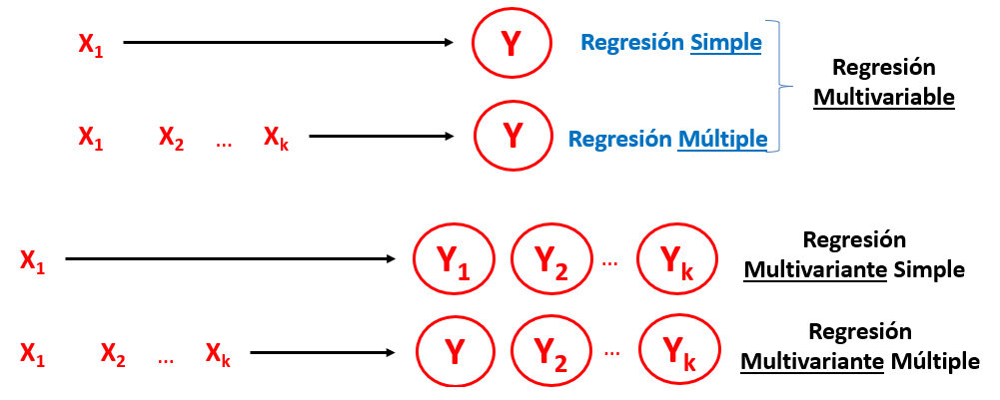Conjunto de técnicas estadística para estimar la relación entre variables.
Modelos de regresión multivariable
Los modelos de regresión multivariable modelan una sola variable dependiente en función de una o más variables independientes.
- El desenlace define el tipo de regresión multivariable.
¿Para qué usamos los modelos de regresión?
Según
STRATOSpodemos usar regresión para 3 propósitos diferentes:Descripción*
Predicción
Explicación
Propósitos del modelamiento
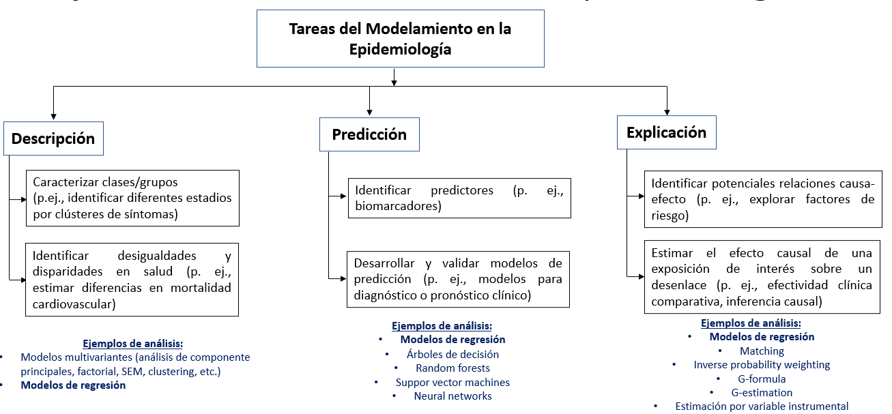
Propósitos del modelamiento (cont.)
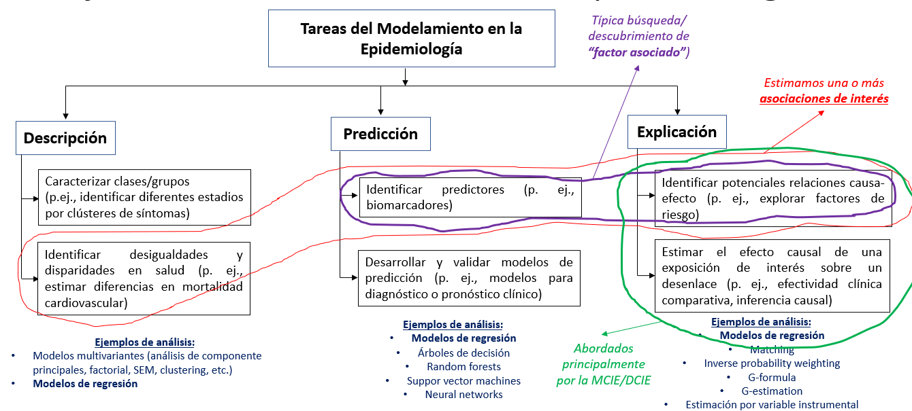
¿Para qué usamos los modelos de regresión? (cont.)
Este curso se centrará solamente en algunas aplicaciones.
No abordaremos modelos de regresión para desarrollar modelos o reglas de predicción clínica.
Tampoco para métodos de inferencia causal robusta.
- Evaluación de la magnitud de desigualdades, magnitud de brechas, etc.
- “Factores asociados..:” No necesariamente importa que los factores sean causales.
- “Efecto / Efectividad / Impacto”: Busca estimar efectos causales.
- Explorar potenciales factores causales… (puede clasificarse dentro de descripción)
- Factores pronóstico o predictores de…“: Identifican predictores de interés que luego alimenten mdelos predictivos.
- Modelos de predicción: Predicción para diagnóstico y pronóstico.
Modelo de Regresión Lineal Simple
Agenda
Introducción al modelado de regresión
Modelo de Regresión Lineal Simple
Regresión Lineal Simple en R
Regresión Lineal Múltiple
Regresión Lineal Múltiple en R
Evaluación de Supuestos
Regresión Lineal
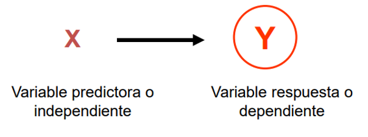Método estadístico que modela la
relaciónentre unavariable continua (dependiente)y otrasvariables (independientes).
Relación entre dos variables
\(Y\) es
variable resultado(outcome), respuesta o dependiente.\(X\) es una
variable explicativa, predictora o regresora.En la figura, a mayor valor de \(X\), mayor valor de \(Y\).
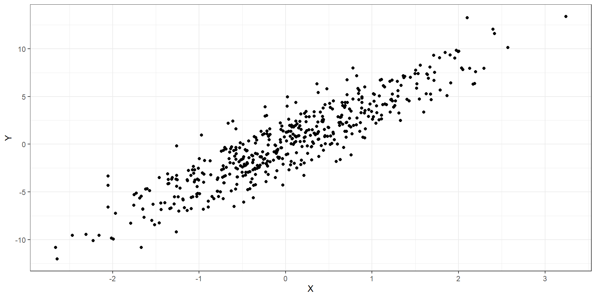
¿Cómo podemos resumir la relación entre ambas variables?
Podemos tratar de dibujar una
línea rectaqueresumala relación.Existen
infinitas rectas posiblesque podríamos trazar: ¿Cuál elegir?
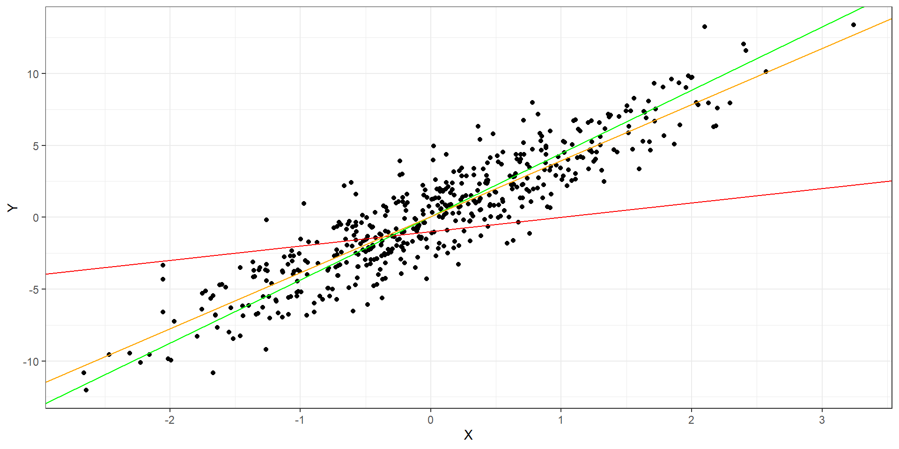
¿Cómo podemos resumir la relación entre ambas variables? (cont.)
- Una opción sería elegir una
rectaque pase por elvalor más representativodel \(y_i\) en cada valor fijo de \(x_1\).- Una
rectaqueconectelospromedios condicionadosen \(x_1\)
- Una
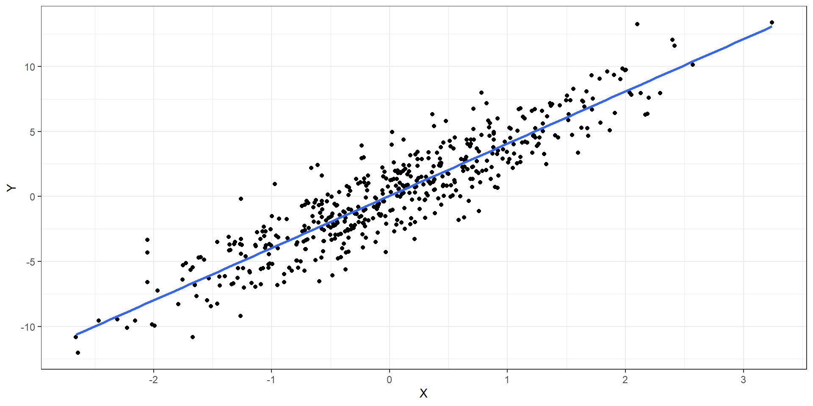
Anatomía de la RLS
- Entonces, el modelo de
regresión lineal simplese puede expresar de la siguiente manera:
\[y_i = \underbrace{\beta_0 + \beta_1x_{1i}}_{\text{componente} \\ \text{sistemático}} + \underbrace{\epsilon_i}_{\text{componente} \\ \text{aleatorio}}\]
El
componente sistemáticodescribe la media de \(y_i\) en cada valor fijo de \(x_{1i}\):Media condicionada de y en x.- Pero el promedio no existe, los que existen son los individuos.
El
componente aleatoriodescribe la variación de los individuos alrededor de cada media condiciona de y:- Se asume cierta distribución conocida.
Componente sistemático
- Formalmente hablando, para cada
observación\(i\) en la población, podemosrelacionarelvalor esperado(media) \(E[y_i]\) de \(y_i\) (también llamado \(\mu_i\)) con lavariable explicativa\(x_{1i}\) mediante la siguienteecuación lineal:
\[E[Y | X_1 = x_{1i}] = E[y_i] = \mu_i = \beta_0 + \beta_1x_{1i}\]
- Donde:
- \(y_i\) son realizaciones de
variables aleatoriasindependientes e idénticamente distribuidas (i.i.d) - \(x_1\) es una variable cuyas valores son fijos y conocidos: \(x_1i\):
- \(\beta_0\) y \(\beta_1\) son
parámetros desconocidosde una superpoblación infinita.
- \(y_i\) son realizaciones de
Algunasn notas sobre el componente sistemático
\(x_1\) es fijo
- Se asume se miden sin error.
- No importa su distribución.
\(\beta_0\) y \(\beta_1\)
- Llamados
coeficientes de regresióny son unamedida de asociación. - Es lo que
queremos estimarcon los datos de la muestra!
Advertencia
- Notar que el
componente sistemáticosolorelacionaelpromedio condicionadode \(y_i\) con lasvariables explicativas, NO con los valores individuales. - Esta es una manera de obtener una medida que resuma las relaciones individuales en una sola medida.
Componente aleatorio
- Para poder relacionar completamente los valores individuales con la ecuación de regersión se agrega un término de error \(\epsilon\), el cual se obtiene de restar el valor observado \(y_i\) con el valor esperado de este (\(\mu_i\)):
\[\epsilon_i = y_i - \mu_i\]
El problema es que el término de error \(\epsilon_i\) no puede predecirse ni estimarse con los datos, se considera que es el
componente no explicadopor la variable independiente.- Para lidiar con este, se asume que su comportamiento puede predecirse a nivel probabilístico: Se asume una distribución de este.
- El error \(\epsilon_i\) hereda la distribución de probabilidad de \(y_i\).
Componente aleatorio (cont.)
- Por lo tanto, el valor individual de cada \(y_i\) puede ser denotado por la siguiente expresión:
\[y_i = \beta_0 + \beta_1x_{1i} + \epsilon_i\]
- Para hacer inferencia estadística, a menudo se asume lo siguiente:
\[y_i \sim N(\beta_0 + \beta_1x_{1i}, \sigma^2)\]
\[\epsilon_i \sim N(0, \sigma^2) \]
En resumen
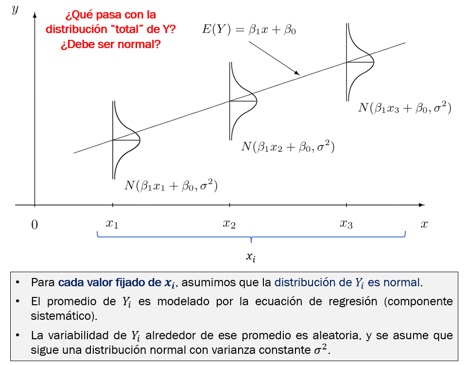Estimación de ecuación de regresión
- En la práctica no conocemos los valores de los parámetros, así que los estimamos de nuestros datos.
¿Cómo estimamos la ecuación lineal que mejor ajusta a los datos observados?
Usamos
métodos numéricos:Método de Mínimos Cuadrados Ordinarios (MCO)Método de
Máxima Verosimilitud (MV)
MCO y MV son equivalentes para el caso de la regresión lineal normal.
El
estimador MCOesinsesgado, no importa la distribución de \(y_i\) o \(\epsilon_i\).El estimador MCO tiene
mínima varianzasi y solo si:- Hay
independencia de observaciones. - Hay
normalidad.
- Hay
Algunas notas sobre normalidad
No es necesario que \(\epsilon_i\) o sigan una distribución normal para que los coeficientes de regresión \(\beta\) puedan estimarse de manera puntual.
Sin embargo, para estimar el
valor po losintervalos de confianzamedianteinferencia clásicasí se necesita asumir una distribución conocida.El modelo de regresión lineal normal asume normalidad de \(y_i\) y \(\epsilon_i\).
Sin embargo, el modelo es robusto a desviaciones leves/moderadas de la normalidad cuando se cumple el TLC (número de observaciones grande).
Otros enfoques para inferencia flexibilizan este supuesto:
- Bootstrap, varianza robusta, modelo lineal generalizado que asume otras distribuciones, etc.
Regresión Lineal Simple sobre variable explicativa categórica
Las
variables categóricasno son continuas, en cambio son discretas y asumen solo unos cuantos valores.¿Cómo estimar una medida de asociación cuando la variable explicativa es categórica?
Veamos el caso binario.
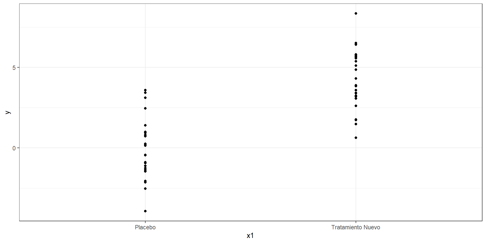
Regresión Lineal Simple sobre variable explicativa categórica (cont.)
Si la variable es
binaria, asignamos a una categoría elvalor de 1y a otra elvalor de 0.Asumiremos que la variable categórica es numérica para los efectos de todo cálculo.
Sin embargo, la interpretación se centrará en la comparación de categorías 0 y 1, nunca se interperará valores intermedios porquen o existen.
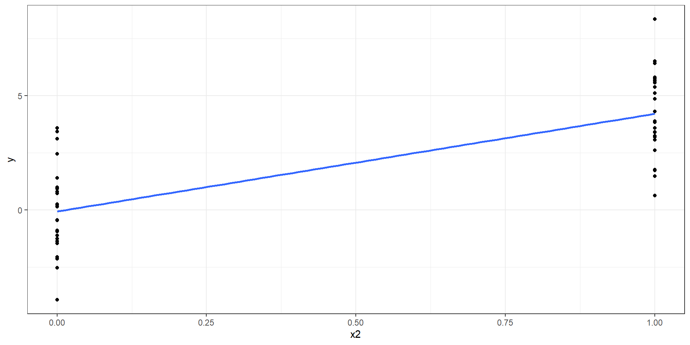
Regresión Lineal Simple en R
Agenda
Introducción al modelado de regresión
Modelo de Regresión Lineal Simple
Regresión Lineal Simple en R
Regresión Lineal Múltiple
Regresión Lineal Múltiple en R
Evaluación de Supuestos
lm() paso a paso
lm() paso a paso
lm() paso a paso
Se usa la función lm() de R base. Sin embargo, la salida de esta no es muy informativa:
El modelo puede guardarse para realizar más operaciones sobre este. Por ejemplo, mejorar la salida.
Podemos usar summary() para ver resultados detallados.
Call:
lm(formula = y ~ x1, data = datos)
Residuals:
Min 1Q Median 3Q Max
-3.8666 -1.1168 -0.3487 1.3100 4.1336
Coefficients:
Estimate Std. Error t value Pr(>|t|)
(Intercept) -0.06666 0.37316 -0.179 0.859
x1Tratamiento Nuevo 4.27094 0.52773 8.093 1.59e-10 ***
---
Signif. codes: 0 '***' 0.001 '**' 0.01 '*' 0.05 '.' 0.1 ' ' 1
Residual standard error: 1.866 on 48 degrees of freedom
Multiple R-squared: 0.5771, Adjusted R-squared: 0.5683
F-statistic: 65.5 on 1 and 48 DF, p-value: 1.594e-10Interpretación de salida de RLS
- Usamos la función lm():
Call:
lm(formula = y_peso_final ~ x3_peso_inicial, data = datos2)
Residuals:
Min 1Q Median 3Q Max
-10.0568 -4.7717 -0.8704 5.1824 10.4953
Coefficients:
Estimate Std. Error t value Pr(>|t|)
(Intercept) -5.4317 2.6574 -2.044 0.0412 *
x3_peso_inicial 1.3447 0.1766 7.615 6.1e-14 ***
---
Signif. codes: 0 '***' 0.001 '**' 0.01 '*' 0.05 '.' 0.1 ' ' 1
Residual standard error: 5.535 on 998 degrees of freedom
Multiple R-squared: 0.05491, Adjusted R-squared: 0.05397
F-statistic: 57.99 on 1 and 998 DF, p-value: 6.1e-14- El modelo estimado sería el siguiente:
\[y\_pesofinal = -5.4317 + 1.3447*x3\_pesoinicial + \epsilon_i\]
\[\epsilon_i \sim Normal(0, 5.535^2)\]
- Usando el paquete
{broom}y su funcióntidy()podemos obtener también los intervalos de confianza:
# A tibble: 2 × 7
term estimate std.error statistic p.value conf.low conf.high
<chr> <dbl> <dbl> <dbl> <dbl> <dbl> <dbl>
1 (Intercept) -5.43 2.66 -2.04 4.12e- 2 -10.6 -0.217
2 x3_peso_inicial 1.34 0.177 7.62 6.10e-14 0.998 1.69 Interpretación:
\(\beta_0\) o
intercepto: Este viene a ser el valor promedio de \(y\) cuando todos los valores de \(x\) son 0. En este caso, cuando el peso inicial es cero kg. ¿Esto es posible?, por tal motivo, no se suele interpretar este valor.\(\beta_1\) o coeficiente de regresión de
x3_peso_inicial: Porcada 1 kg adicionalde peso inicial, elvalor promediodel peso final aumenta 1.43 kg (IC95% 1.00 a 1.69; p < 0.001).
- Usamos la función lm():
Call:
lm(formula = y_peso_final ~ x1_tto, data = datos2)
Residuals:
Min 1Q Median 3Q Max
-7.7043 -1.6644 -0.0095 1.5849 8.5658
Coefficients:
Estimate Std. Error t value Pr(>|t|)
(Intercept) 19.8771 0.1112 178.67 <2e-16 ***
x1_ttoTratamiento Nuevo -10.2325 0.1573 -65.04 <2e-16 ***
---
Signif. codes: 0 '***' 0.001 '**' 0.01 '*' 0.05 '.' 0.1 ' ' 1
Residual standard error: 2.488 on 998 degrees of freedom
Multiple R-squared: 0.8091, Adjusted R-squared: 0.8089
F-statistic: 4230 on 1 and 998 DF, p-value: < 2.2e-16- Usando tidy de broom:
# A tibble: 2 × 7
term estimate std.error statistic p.value conf.low conf.h…¹
<chr> <dbl> <dbl> <dbl> <dbl> <dbl> <dbl>
1 (Intercept) 19.9 0.111 179. 0 19.7 20.1
2 x1_ttoTratamiento Nuevo -10.2 0.157 -65.0 0 -10.5 -9.92
# … with abbreviated variable name ¹conf.highInterpretación:
\(\beta_0\) (Intercept): A menudo no se interpreta. Es el valor promedio de \(y_i\) cuando los valores de \(x\) son cero. En este caso, cuando el tratamien es cero (placebo). ¿Esto es posible?, sí es posible pero no es de ayuda para modelos explicativos, por lo que no se interpreta.
\(\beta1\) x1Tratamiento Nuevo: El promedio de peso final en quienes recibieron el tratamiento nuevo fue 10.23 kg menor que el de quienes recibieron placebo (Dif. medias = -10.23; IC95% -10.54 a -9.92; p < 0.001).
Regresión Lineal Múltiple
Agenda
Introducción al modelado de regresión
Modelo de Regresión Lineal Simple
Regresión Lineal Simple en R
Regresión Lineal Múltiple
Regresión Lineal Múltiple en R
Evaluación de Supuestos
Regresión Lineal Múltiple
El modelo de regresión lineal múltiple generaliza la RLS permitiendo evaluar la relación de varias covariables explicativas \(x\) sobre \(y_i\).
- Para \(p\) variables explicativas, el modelo puede expresarse como:
Componente sistemático:
\[E[Y | X_1 = x_{1i}, ..., X_p = x_{pi}] = E[y_i] = \mu_i = \beta_0 + \beta_1x_{1i} + ... + \beta_px_{pi}\]
Componente aleatoria:
\[y_i \sim N(\beta_0 + \beta_1x_{1i} + ... + \beta_px_{pi}, I\sigma^2)\]
\[\epsilon_i \sim N(0, \sigma^2) \]
Regresión Lineal en gráficos
- La ecuación de la RLS representa una línea recta.
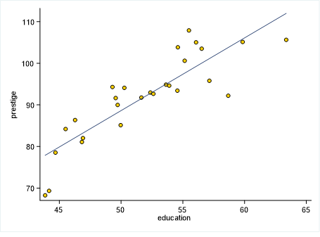
- La ecuación de la RLM con dos variables explicativas ya no representa una línea recta, sino un plano recto.
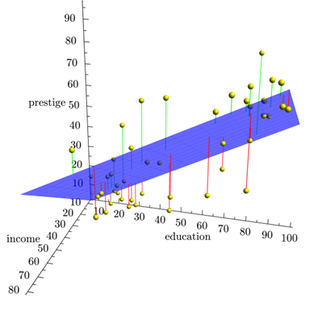
Genera un hiperplano recto.
No podemos imaginarnos una imagen de esto, pero sí podemos analizarlo a nivel estadístico.
- Algebra lineal proporciona herramientas para lidiar con esto usando matrices.
Regresión Lineal Múltiple en R
Agenda
Introducción al modelado de regresión
Modelo de Regresión Lineal Simple
Regresión Lineal Simple en R
Regresión Lineal Múltiple
Regresión Lineal Múltiple en R
Evaluación de Supuestos
lm() para RLM paso a paso
- El modelo RLS solo incluye una covariable.
Call:
lm(formula = y_peso_final ~ x1_tto, data = datos2)
Residuals:
Min 1Q Median 3Q Max
-7.7043 -1.6644 -0.0095 1.5849 8.5658
Coefficients:
Estimate Std. Error t value Pr(>|t|)
(Intercept) 19.8771 0.1112 178.67 <2e-16 ***
x1_ttoTratamiento Nuevo -10.2325 0.1573 -65.04 <2e-16 ***
---
Signif. codes: 0 '***' 0.001 '**' 0.01 '*' 0.05 '.' 0.1 ' ' 1
Residual standard error: 2.488 on 998 degrees of freedom
Multiple R-squared: 0.8091, Adjusted R-squared: 0.8089
F-statistic: 4230 on 1 and 998 DF, p-value: < 2.2e-16lm() para RLM paso a paso
El modelo RLS solo incluye una covariable.
El modelo de RLM incluye 2 o más covariables.
Estas se agregan con un símbolo
+Notar que no se reportan intervalos de confianza al 95%.
Call:
lm(formula = y_peso_final ~ x1_tto + x3_peso_inicial, data = datos2)
Residuals:
Min 1Q Median 3Q Max
-5.5598 -1.4213 0.1343 1.0768 5.4482
Coefficients:
Estimate Std. Error t value Pr(>|t|)
(Intercept) -0.94719 0.99689 -0.95 0.342
x1_ttoTratamiento Nuevo -10.25530 0.13111 -78.22 <2e-16 ***
x3_peso_inicial 1.38755 0.06614 20.98 <2e-16 ***
---
Signif. codes: 0 '***' 0.001 '**' 0.01 '*' 0.05 '.' 0.1 ' ' 1
Residual standard error: 2.073 on 997 degrees of freedom
Multiple R-squared: 0.8676, Adjusted R-squared: 0.8673
F-statistic: 3266 on 2 and 997 DF, p-value: < 2.2e-16{broom} paso a paso
El paquete {broom} tiene funciones que facilitan obtener varios estadísticos de interés de los modelos de regresión.
La función tidy() permite obtener intervalos de confianza y otras medidas de interés.
{broom} paso a paso
El paquete {broom} tiene funciones que facilitan obtener varios estadísticos de interés de los modelos de regresión.
La función tidy() permite obtener intervalos de confianza y otras medidas de interés.
Además, retorna un
tibble()que puede manipularse y luego embeberse en una tabla.Primero se carga el paquete:
{broom} paso a paso
- La función tidy() genera un resultado en formato
tibble()que puede ser manipulado, exportado a excel, y convertido a tabla.
# A tibble: 3 × 5
term estimate std.error statistic p.value
<chr> <dbl> <dbl> <dbl> <dbl>
1 (Intercept) -0.947 0.997 -0.950 3.42e- 1
2 x1_ttoTratamiento Nuevo -10.3 0.131 -78.2 0
3 x3_peso_inicial 1.39 0.0661 21.0 3.10e-81{broom} paso a paso
- Con el argumento
conf.int = TRUEmostramos también los intervalos de confianza.
# A tibble: 3 × 7
term estimate std.error statistic p.value conf.low conf.…¹
<chr> <dbl> <dbl> <dbl> <dbl> <dbl> <dbl>
1 (Intercept) -0.947 0.997 -0.950 3.42e- 1 -2.90 1.01
2 x1_ttoTratamiento Nuevo -10.3 0.131 -78.2 0 -10.5 -10.0
3 x3_peso_inicial 1.39 0.0661 21.0 3.10e-81 1.26 1.52
# … with abbreviated variable name ¹conf.high{broom} paso a paso
| term | estimate | std.error | statistic | p.value | conf.low | conf.high |
|---|---|---|---|---|---|---|
| (Intercept) | -0.9471917 | 0.99689433 | -0.9501426 | 3.422701e-01 | -2.903444 | 1.009060 |
| x1_ttoTratamiento Nuevo | -10.2553009 | 0.13110928 | -78.2194924 | 0.000000e+00 | -10.512583 | -9.998019 |
| x3_peso_inicial | 1.3875541 | 0.06613671 | 20.9800905 | 3.097784e-81 | 1.257771 | 1.517337 |
{broom} paso a paso
{broom} paso a paso
mod %>%
tidy(conf.int = TRUE) %>%
mutate(estimate = round(estimate, 2),
conf.low = round(conf.low, 2),
conf.high = round(conf.high, 2),
p.value2 = case_when(
p.value < 0.001 ~ "<0.001",
p.value >= 0.001 ~ as.character(round(p.value, 3))
)) %>%
select(term, estimate, conf.low, conf.high, p.value2) %>%
gt()| term | estimate | conf.low | conf.high | p.value2 |
|---|---|---|---|---|
| (Intercept) | -0.95 | -2.90 | 1.01 | 0.342 |
| x1_ttoTratamiento Nuevo | -10.26 | -10.51 | -10.00 | <0.001 |
| x3_peso_inicial | 1.39 | 1.26 | 1.52 | <0.001 |
- También podemos manipular la tabla para personalizarla usando “verbos” del paquete {dplyr}.
{broom} paso a paso
mod %>%
tidy(conf.int = TRUE) %>%
mutate(estimate = round(estimate, 2),
conf.low = round(conf.low, 2),
conf.high = round(conf.high, 2),
p.value2 = case_when(
p.value < 0.001 ~ "<0.001",
p.value >= 0.001 ~ paste("= ", round(p.value, 3))
)) %>%
mutate(
`Coeficiente (IC95%), p valor` =
glue("{estimate} (IC95% {conf.low} a {conf.high}), p {p.value2}"),
Variables = c("Intercepto", "Tratamiento nuevo vs. Placebo", "Peso inicial (kg)")
) %>%
select(Variables, `Coeficiente (IC95%), p valor`) %>%
gt()| Variables | Coeficiente (IC95%), p valor |
|---|---|
| Intercepto | -0.95 (IC95% -2.9 a 1.01), p = 0.342 |
| Tratamiento nuevo vs. Placebo | -10.26 (IC95% -10.51 a -10), p <0.001 |
| Peso inicial (kg) | 1.39 (IC95% 1.26 a 1.52), p <0.001 |
- Incluso más personalización de lo que imaginan…
En resumen
Call:
lm(formula = y_peso_final ~ x1_tto + x3_peso_inicial, data = datos2)
Residuals:
Min 1Q Median 3Q Max
-5.5598 -1.4213 0.1343 1.0768 5.4482
Coefficients:
Estimate Std. Error t value Pr(>|t|)
(Intercept) -0.94719 0.99689 -0.95 0.342
x1_ttoTratamiento Nuevo -10.25530 0.13111 -78.22 <2e-16 ***
x3_peso_inicial 1.38755 0.06614 20.98 <2e-16 ***
---
Signif. codes: 0 '***' 0.001 '**' 0.01 '*' 0.05 '.' 0.1 ' ' 1
Residual standard error: 2.073 on 997 degrees of freedom
Multiple R-squared: 0.8676, Adjusted R-squared: 0.8673
F-statistic: 3266 on 2 and 997 DF, p-value: < 2.2e-16
\[y\_pesofinal = -0.94719 -10.25530*x1ttoTratamientoNuevo + 1.3875*x3\_pesoinicial + \epsilon_i\]
\[\epsilon_i \sim Normal(0, 2.073^2)\]
| term | estimate | std.error | statistic | p.value | conf.low | conf.high |
|---|---|---|---|---|---|---|
| (Intercept) | -0.9471917 | 0.99689433 | -0.9501426 | 3.422701e-01 | -2.903444 | 1.009060 |
| x1_ttoTratamiento Nuevo | -10.2553009 | 0.13110928 | -78.2194924 | 0.000000e+00 | -10.512583 | -9.998019 |
| x3_peso_inicial | 1.3875541 | 0.06613671 | 20.9800905 | 3.097784e-81 | 1.257771 | 1.517337 |
\(\beta_0\) o
intercepto: Este viene a ser el valor promedio de \(y\) cuando todos los valores de \(x\) son 0. En este caso, cuando el peso inicial es cero kg y cuando el tratamiento es placebo. ¿Esto es posible?, por tal motivo, no se suele interpretar este valor.\(\beta_2\) o coeficiente de regresión de
x1_ttoTratamiento Nuevo: El promedio de peso final en quienes recibieron el tratamiento nuevo fue 10.26 kg menor que el de quienes recibieron placebo, luego de ajustar por peso inicial (Dif. medias = -10.26; IC95% -10.51 a -9.99; p < 0.001).\(\beta_1\) o coeficiente de regresión de
x3_peso_inicial: Porcada 1 kg adicionalde peso inicial, elvalor promediodel peso final aumenta 1.39 kg, luego de ajustar por tatamiento recibido (IC95% 1.26 a 1.52; p < 0.001).
Evaluación de Supuestos
Agenda
Introducción al modelado de regresión
Modelo de Regresión Lineal Simple
Regresión Lineal Simple en R
Regresión Lineal Múltiple
Regresión Lineal Múltiple en R
Evaluación de Supuestos
Errores y residuos
Los
errores(\(\epsilon_i\)) son medidas de la población a la que no tenemos acceso.- Sin embargo, varios supuestos de la regresión involucran a los errores inaccesibles por el investigador.
Los
residuos(\(e_i\)) son el análogo a loserrorespero obtenidos de lamuestra observada.Podemos usar los
residuosparaevaluaralgunossupuestossobre loserrores.
Residuos gráficamente
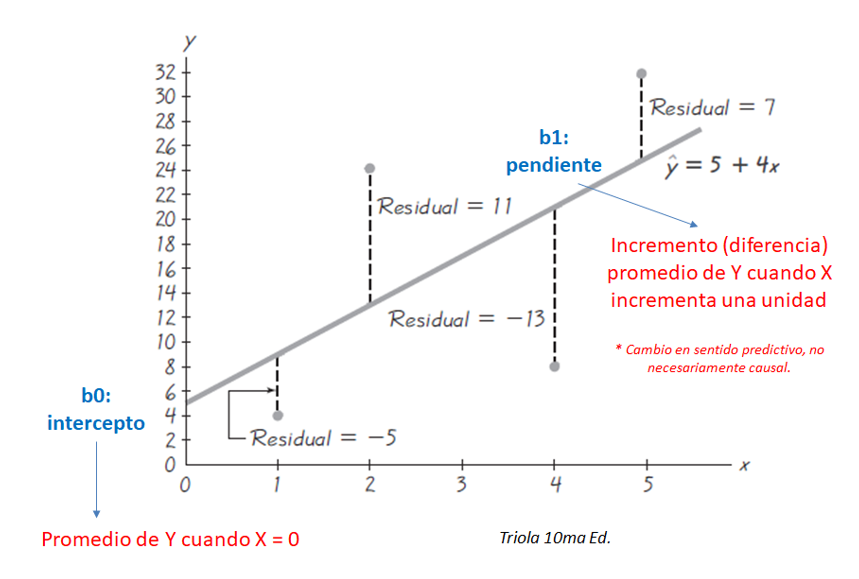Supuestos de la regresión lineal normal
Supuestos estadísticos del modelo
Linealidad
Independencia de observaciones
Homocedasticidad de los errores \(\epsilon_i\)
Normalidad de los errores \(\epsilon_i\) o de \(y_i\).
No problemas con la regresión:
- Puntos influyentes.
- (Multi) colinealidad: Solo cuando es un problema, no siempre lo es.
Supuestos adicionales que suelen acompañar a la regresión lineal normal
Supuestos si queremos generalizar a una población finita bien definida
La muestra es representativa de la población.
- Ideal para alcanzar esto es mediante muestreo probabilístico: representatividad estadística.
Cuando no lo tenemos, solo podemos generalizar a una población que sabemos que existe pero no podemos definir. ¿Qué tan relevante puede ser esto?
- Otros consideran (¿ingenuamente?) que, bajo ciertas condiciones, se puede alcanar una representativadad teórica.
Hay asignación aleatoria
- Ideal para alcanzar esto es mediante experimento aleatorizado.
Cuando no lo tenemos, tenemos que poder asumir (¿ingenuamente?) que se puede emular la asignación aleatoria de alguna manera:
- El ajuste de regresión por confusores es una manera de pensar en esto.
Algunas notas sobre los errores y residuos para evaluar supuestos
En realidad, los supuestos de los modelos lineales son sobre el comportamiento probabilístico de \(y_i\).
Sin embargo, la idea de la existencia de los
erroresy de sus valores observados en la muestra,residuosresulta útil para evaluar supuestos.Permiten reducir un problema de muchas dimensiones a solo 1 o 2 dimensiones.
Son como las placas radiográficas para el diagnóstico de los modelos.
Algunas notas sobre los errores y residuos para evaluar supuestos
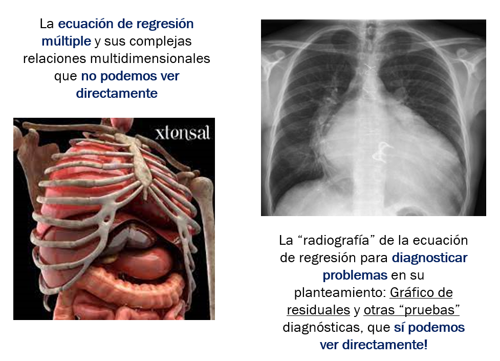¿Cómo evaluar los supuestos de la regresión lineal?
Se usan los residuos para explorar el comportamiento de los \(y_i\) o los errores \(\epsilon\).
Preferiblemente usar gráficos de residuos.
Pruebas de hipótesis que usan residuos tienen los mismos problemas que discutimos en clases anteriores.
Podríamos usarlas para complementar análisis cuando los tamaños de muestra no son ni muy pequeños ni muy grandes.
La función
check_modeldel paquete{performance}genera un panel de gráficos muy útil para evalur estos supuestos.Podemos complentar el análisis de supuestos con funciones del paquete
{car}.
- Podemos usar gráficos de residuos parciales + Componente:
- También podemos usar gráficos de variable agregada
Se puede evaluar si la homocedasticidad es consistente según cada variable predictora.
Si no lo es, se puede optar por modelar esta heterogeneidad de varianzas.
Se sugiere usar
residuos estudentizados.
¿Cómo flexibilizar supuestos?
El supuesto de linealidad es sobre los coeficientes de regresión \(\beta\), no sobre las covariables.
Las variables X deben estar en una forma apropiada para que el supuesto se cumpla.
Es bien difícil que exista linealidad en la realida, pero puede ocurrir en raras y excepcionales ocasiones.
- Sobre todo cuando la variable está acotada en valores donde la linealidad es plausible.
Se sugiere asumir no linealidad y pre-planear un modelamiento no lineal.
Entre los métodos que pueden usarse, tenemos:
Splines: Bastante usado y sugerido en bioestadística. Útil para ajustar por variables continuas.Modelamiento Multivariablede polinomios fraccionales. También usado y recomendado en literatura biomédica. Útil para modelar forma como objetivo principal.Polinomios. Menos flexible, puede ser útil si se conoce bien la relación o se busca mejorar ajuste.Modelos aditivos generalizados. Útil si se buscar modelar la relación. Complejos y requieren muchos datos.
Veamos un ejemplo de modelamiento continuo con
splines:
Evite categorizar la variable continua
Categorizar es muy malo: se pierde información y se corre el riesgo de sesgar resultados.
Si se quiere ajustar por variables continuas, use Splines o Polinomios fraccionales. No requiere interpretar sus resultados, pero si ajsutar bien!
Si se quiere evaluar la relación de la variable continua, planee un método estadístico para modelar la forma sin asumir linealidad.
Presuponga que la relación no es lineal.
Modelo y responda su pregunta. Si la relación es lineal, el modelo más complejo revelerá una línea recta.
No homogeneidad de varianzas
Podemos usar una estimación robusta de la varianza.
Los paquetes
{sanwich}y{lmtest}proporcionan funciones útiles para esto.Es bien difícil de creer que existe homogeneidad de varianzas en la vida real (salvo muy raras y excepcionales ocasiones).
- Se sugiere planear el proyecto asumiendo que no hay homocedasticidad y usar inferencia robusta de manera pre-planeada.
# A tibble: 3 × 7
term estimate std.error statistic p.value conf.low conf.…¹
<chr> <dbl> <dbl> <dbl> <dbl> <dbl> <dbl>
1 (Intercept) -0.947 1.05 -0.906 3.65e- 1 -3.00 1.10
2 x1_ttoTratamiento Nuevo -10.3 0.131 -78.1 0 -10.5 -10.0
3 x3_peso_inicial 1.39 0.0692 20.0 2.45e-75 1.25 1.52
# … with abbreviated variable name ¹conf.highSi distribución es normal (cosa que no podemos saber con certeza), podemos dejar de preocuparnos por este supuesto.
Si se cumple TLC, podemos dejar de preocuparnos por este supuesto.
Si no se cumple TLC o hay dudas razonables, podemos optar por alguna de las siguientes alternativas:
- Transformar Y para normalizar (p. ej., logaritmo)
- Usar varianza robusta
- Estimar varianza con bootstrapping u otro método de remuestreo.
https://github.com/psotob91
percys1991@gmail.com
R Aplicado a los Proyectos de Investigación - Sesión 8